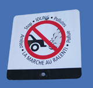
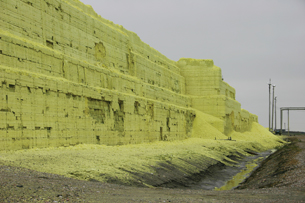

Module 5—Hydrocarbons and the Petroleum Industry
 Explore
Explore
 Read
Read

© Stephen Finn/shutterstock
The petroleum industry supplies fuel for automobiles. As a result, the petroleum and automobile industries are linked. One of the most common combustion reactions that occurs around you happens inside a car engine. From previous science courses you know there are products of combustion reactions. You may recall that some of these products can have global effects.
Cars are often lined up at drive-thrus. Their engines are running, but they aren’t going anywhere. Signs like the one shown in the photograph indicate there is concern about idling. Why the concern?
You may remember that a combustion reaction is the rapid reaction of a chemical with oxygen to produce oxides and heat. Read pages 398–400 in the textbook to learn more about combustion reactions and the concerns about tailpipe emissions and other exhaust.
 Self-Check
Self-Check
SC 1. Write two balanced equations: one for the complete and one for the incomplete combustion of pentane. Compare the oxygen needed in each equation.
Self-Check Answers
Contact your teacher if your answers vary significantly from the answers provided here.
SC 1.
complete combustion: C5H12(l) + 8 O2(g) → 5 CO2(g) + 6 H2O(g)
incomplete combustion: 2 C5H12(l) + 11 O2(g) → 10 CO(g) + 12 H2O(g)
(one of many possible equations)
In the first equation 8 mol of O2 are required per mol of pentane. In the second equation 5.5 mol of O2 are required per mol of pentane. Complete combustion generally requires more oxygen than incomplete combustion.
Other Problems with Combustion Reactions
From your reading you know that the quantity of oxygen available to a hydrocarbon is important in ensuring complete combustion. But is ensuring complete combustion the answer to environmental concerns? In Chemistry 20 you learned about carbon dioxide, its action as a greenhouse gas, and how this has contributed to global climate change.
The quantity of uncombusted hydrocarbons present in automobile exhaust is another reason vehicle idling is a problem. These compounds can range from components initially in the fuel that do not react with oxygen at all, to new hydrocarbons produced as side products. Some of these hydrocarbons are the same compounds that are present in tobacco and other sources of smoke. You may know from health warnings that some of these compounds can be carcinogenic.
Self-Check
SC 2. Use the Internet to compile two lists of hydrocarbons: one for those present in car exhaust, and one for those present in diesel exhaust. Comment on the composition of each list. Can you identify any similarities between the substances appearing in each list?
Self-Check Answers
Contact your teacher if your answers vary significantly from the answers provided here.
SC 2. Many hydrocarbons are present in exhaust from both fuel types, but the percentage of each compound can be quite low. Depending upon the composition of the fuel in the research collected, benzene and toluene are present at relatively high levels. You may have identified the following trends:
- Diesel produces a greater percentage of black carbon (soot) and polycyclic aromatic hydrocarbons (PAH) than gasoline.
- Gasoline tends to produce a higher quantity of smaller hydrocarbons, which is not surprising considering gasoline is composed of hydrocarbons from a fraction of refined oil that has fewer carbons that diesel fuel.
Read
Combustion processes using fossil fuels have other unwanted side products. Nitrogen monoxide, NO(g), is a by-product of combustion reactions that occur at high temperatures, such as the temperature in an engine or furnace. Nitrogen monoxide and nitrogen dioxide are produced when NO reacts with oxygen in the atmosphere. These two compounds contribute to the production of acid deposition.
A gasoline component that contributes to the formation of acids is sulfur, often present within organic compounds in fuel. As you saw earlier, sulfur can be removed from natural gas. Efforts are underway to improve sulfur removal from other petroleum sources, including crude oil and natural gas.
Read page 393 in the textbook to learn more about the process used to remove sulfur from gasoline.
Self-Check
SC 3. Identify a possible negative side effect of improved sulfur removal practices during the refining of gasoline.
Self-Check Answers
Contact your teacher if your answers vary significantly from the answers provided here.
SC 3. Elemental sulfur is a product of the treatment process. Because of the large volume of gasoline produced, a large quantity of elemental sulfur is also produced. The sulfur is often stored outdoors in large blocks, which become extremely large over time.
As shown in the picture, because of their exposure to wind, rain, and snow, blocks can erode over time. The picture also shows a plastic-lined trench designed to collect water that drains from the block. The plastic lining prevents the water from seeping into the underlying soil. If it is not contained, water in this trench could become acidified and could pose a threat to biological systems.
